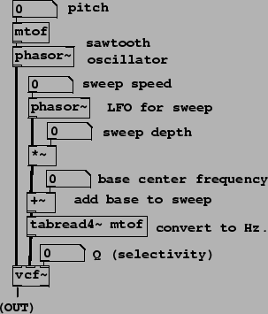

Time-varying band-pass filtering, as often used in classical subtractive synthesis (Section 8.4.1), can be done using the vcf~ object, introduced here:
 :
a ``voltage controlled" band-pass filter,
similar to bp~, but with a signal inlet to control center frequency.
Both bp~ and vcf~ are one-pole resonant filters as
developed in Section 8.3.4; bp~ outputs only
the real part of the resulting signal, while vcf~ outputs the
real and imaginary parts separately.
:
a ``voltage controlled" band-pass filter,
similar to bp~, but with a signal inlet to control center frequency.
Both bp~ and vcf~ are one-pole resonant filters as
developed in Section 8.3.4; bp~ outputs only
the real part of the resulting signal, while vcf~ outputs the
real and imaginary parts separately.
|  |
Example H04.filter.sweep.pd (Figure 8.29) demonstrates using the vcf~ object for a simple and characteristic subtractive synthesis task. A phasor~ object (at top) creates a sawtooth wave to filter. (This is not especially good practice as we are not controlling the possibility of foldover; a better sawtooth generator for this purpose will be developed in Chapter 10.) The second phasor~ object (labeled ``LFO for sweep") controls the time-varying center frequency. After adjusting to set the depth and a base center frequency (given in MIDI units), the result is converted into Hertz (using the tabread4~ object) and passed to vcf~ to set its center frequency. Another example of using a vcf~ object for subtractive synthesis is demonstrated in example H05.filter.floyd.pd.